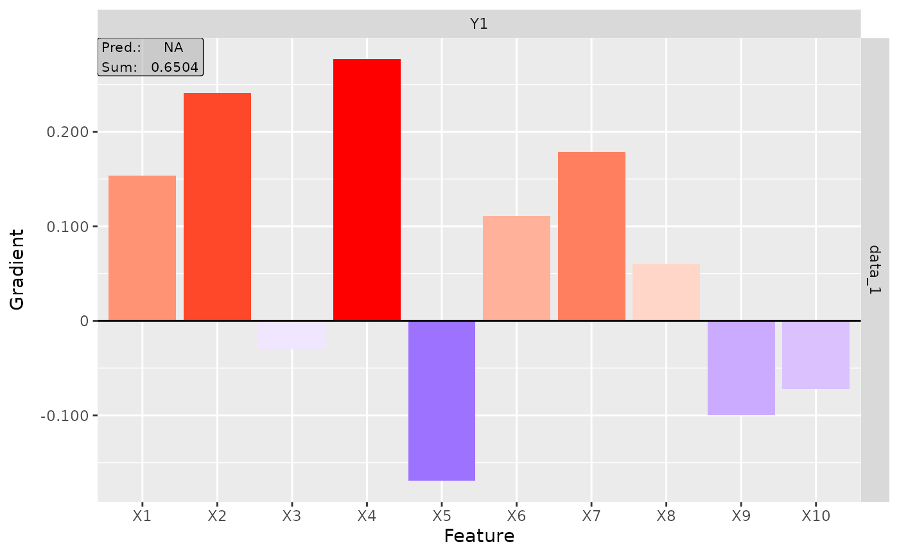

R/torch_gradients.R
as_innsight_result.RdThis function wraps raw gradient attribution tensors (e.g., from
torch_grad, torch_intgrad, etc.) into the
standard InterpretingMethod format used by the innsight
package. The returned object supports all standard methods such as
plot(),
plot_global(), and
get_result.
as_innsight_result(
result,
data,
output_idx = NULL,
channels_first = TRUE,
input_names = NULL,
output_names = NULL,
preds = NULL,
decomp_goal = NULL,
times_input = FALSE
)(torch_tensor)
The gradient-based attributions as a torch tensor with shape
(batch_size, ..., n_outputs) where the last dimension corresponds
to the selected output nodes.
(torch_tensor)
The input data used for calculating the attributions.
(integer)
Indices of the output nodes for which attributions were calculated.
If NULL, defaults to 1:n_outputs.
(logical(1))
Whether the data uses channels-first format. Default: TRUE.
(character, list, or NULL)
Names for the input features. If NULL, default names are
generated (e.g., "X1", "X2", ...). Can be a character
vector for tabular data or a list of character vectors for
multi-dimensional inputs.
(character, list, or NULL)
Names for the output nodes. If NULL, default names are
generated (e.g., "Y1", "Y2", ...).
(torch_tensor or NULL)
Model predictions for the input data, with shape
(batch_size, n_total_outputs). If provided, the columns
corresponding to output_idx are extracted.
(torch_tensor or NULL)
The decomposition target values. Same shape as preds.
(logical(1))
Whether gradients were multiplied by input. This affects the label
shown in plots ("Relevance" vs "Gradient").
Default: FALSE.
An R6 object inheriting from InterpretingMethod
(specifically from GradientBased) with full support for
plot(), plot_global(), get_result(), and
print().
library(torch)
model <- nn_sequential(nn_linear(10, 3))
data <- torch_randn(5, 10)
# Calculate raw gradients
grads <- torch_grad(model, data)
# Convert to innsight result object
result <- as_innsight_result(grads, data)
# Use standard innsight methods
plot(result)

get_result(result, type = "data.frame")
#> data model_input model_output feature output_node value pred
#> 1 data_1 Input_1 Output_1 X1 Y1 0.15332136 NA
#> 2 data_2 Input_1 Output_1 X1 Y1 0.15332136 NA
#> 3 data_3 Input_1 Output_1 X1 Y1 0.15332136 NA
#> 4 data_4 Input_1 Output_1 X1 Y1 0.15332136 NA
#> 5 data_5 Input_1 Output_1 X1 Y1 0.15332136 NA
#> 6 data_1 Input_1 Output_1 X2 Y1 0.24135277 NA
#> 7 data_2 Input_1 Output_1 X2 Y1 0.24135277 NA
#> 8 data_3 Input_1 Output_1 X2 Y1 0.24135277 NA
#> 9 data_4 Input_1 Output_1 X2 Y1 0.24135277 NA
#> 10 data_5 Input_1 Output_1 X2 Y1 0.24135277 NA
#> 11 data_1 Input_1 Output_1 X3 Y1 -0.02941482 NA
#> 12 data_2 Input_1 Output_1 X3 Y1 -0.02941482 NA
#> 13 data_3 Input_1 Output_1 X3 Y1 -0.02941482 NA
#> 14 data_4 Input_1 Output_1 X3 Y1 -0.02941482 NA
#> 15 data_5 Input_1 Output_1 X3 Y1 -0.02941482 NA
#> 16 data_1 Input_1 Output_1 X4 Y1 0.27682924 NA
#> 17 data_2 Input_1 Output_1 X4 Y1 0.27682924 NA
#> 18 data_3 Input_1 Output_1 X4 Y1 0.27682924 NA
#> 19 data_4 Input_1 Output_1 X4 Y1 0.27682924 NA
#> 20 data_5 Input_1 Output_1 X4 Y1 0.27682924 NA
#> 21 data_1 Input_1 Output_1 X5 Y1 -0.16934861 NA
#> 22 data_2 Input_1 Output_1 X5 Y1 -0.16934861 NA
#> 23 data_3 Input_1 Output_1 X5 Y1 -0.16934861 NA
#> 24 data_4 Input_1 Output_1 X5 Y1 -0.16934861 NA
#> 25 data_5 Input_1 Output_1 X5 Y1 -0.16934861 NA
#> 26 data_1 Input_1 Output_1 X6 Y1 0.11079805 NA
#> 27 data_2 Input_1 Output_1 X6 Y1 0.11079805 NA
#> 28 data_3 Input_1 Output_1 X6 Y1 0.11079805 NA
#> 29 data_4 Input_1 Output_1 X6 Y1 0.11079805 NA
#> 30 data_5 Input_1 Output_1 X6 Y1 0.11079805 NA
#> 31 data_1 Input_1 Output_1 X7 Y1 0.17885594 NA
#> 32 data_2 Input_1 Output_1 X7 Y1 0.17885594 NA
#> 33 data_3 Input_1 Output_1 X7 Y1 0.17885594 NA
#> 34 data_4 Input_1 Output_1 X7 Y1 0.17885594 NA
#> 35 data_5 Input_1 Output_1 X7 Y1 0.17885594 NA
#> 36 data_1 Input_1 Output_1 X8 Y1 0.05979582 NA
#> 37 data_2 Input_1 Output_1 X8 Y1 0.05979582 NA
#> 38 data_3 Input_1 Output_1 X8 Y1 0.05979582 NA
#> 39 data_4 Input_1 Output_1 X8 Y1 0.05979582 NA
#> 40 data_5 Input_1 Output_1 X8 Y1 0.05979582 NA
#> 41 data_1 Input_1 Output_1 X9 Y1 -0.09995266 NA
#> 42 data_2 Input_1 Output_1 X9 Y1 -0.09995266 NA
#> 43 data_3 Input_1 Output_1 X9 Y1 -0.09995266 NA
#> 44 data_4 Input_1 Output_1 X9 Y1 -0.09995266 NA
#> 45 data_5 Input_1 Output_1 X9 Y1 -0.09995266 NA
#> 46 data_1 Input_1 Output_1 X10 Y1 -0.07187591 NA
#> 47 data_2 Input_1 Output_1 X10 Y1 -0.07187591 NA
#> 48 data_3 Input_1 Output_1 X10 Y1 -0.07187591 NA
#> 49 data_4 Input_1 Output_1 X10 Y1 -0.07187591 NA
#> 50 data_5 Input_1 Output_1 X10 Y1 -0.07187591 NA
#> 51 data_1 Input_1 Output_1 X1 Y2 0.18162036 NA
#> 52 data_2 Input_1 Output_1 X1 Y2 0.18162036 NA
#> 53 data_3 Input_1 Output_1 X1 Y2 0.18162036 NA
#> 54 data_4 Input_1 Output_1 X1 Y2 0.18162036 NA
#> 55 data_5 Input_1 Output_1 X1 Y2 0.18162036 NA
#> 56 data_1 Input_1 Output_1 X2 Y2 -0.05171393 NA
#> 57 data_2 Input_1 Output_1 X2 Y2 -0.05171393 NA
#> 58 data_3 Input_1 Output_1 X2 Y2 -0.05171393 NA
#> 59 data_4 Input_1 Output_1 X2 Y2 -0.05171393 NA
#> 60 data_5 Input_1 Output_1 X2 Y2 -0.05171393 NA
#> 61 data_1 Input_1 Output_1 X3 Y2 0.15632325 NA
#> 62 data_2 Input_1 Output_1 X3 Y2 0.15632325 NA
#> 63 data_3 Input_1 Output_1 X3 Y2 0.15632325 NA
#> 64 data_4 Input_1 Output_1 X3 Y2 0.15632325 NA
#> 65 data_5 Input_1 Output_1 X3 Y2 0.15632325 NA
#> 66 data_1 Input_1 Output_1 X4 Y2 0.26763803 NA
#> 67 data_2 Input_1 Output_1 X4 Y2 0.26763803 NA
#> 68 data_3 Input_1 Output_1 X4 Y2 0.26763803 NA
#> 69 data_4 Input_1 Output_1 X4 Y2 0.26763803 NA
#> 70 data_5 Input_1 Output_1 X4 Y2 0.26763803 NA
#> 71 data_1 Input_1 Output_1 X5 Y2 0.01587836 NA
#> 72 data_2 Input_1 Output_1 X5 Y2 0.01587836 NA
#> 73 data_3 Input_1 Output_1 X5 Y2 0.01587836 NA
#> 74 data_4 Input_1 Output_1 X5 Y2 0.01587836 NA
#> 75 data_5 Input_1 Output_1 X5 Y2 0.01587836 NA
#> 76 data_1 Input_1 Output_1 X6 Y2 -0.01426428 NA
#> 77 data_2 Input_1 Output_1 X6 Y2 -0.01426428 NA
#> 78 data_3 Input_1 Output_1 X6 Y2 -0.01426428 NA
#> 79 data_4 Input_1 Output_1 X6 Y2 -0.01426428 NA
#> 80 data_5 Input_1 Output_1 X6 Y2 -0.01426428 NA
#> 81 data_1 Input_1 Output_1 X7 Y2 -0.08967419 NA
#> 82 data_2 Input_1 Output_1 X7 Y2 -0.08967419 NA
#> 83 data_3 Input_1 Output_1 X7 Y2 -0.08967419 NA
#> 84 data_4 Input_1 Output_1 X7 Y2 -0.08967419 NA
#> 85 data_5 Input_1 Output_1 X7 Y2 -0.08967419 NA
#> 86 data_1 Input_1 Output_1 X8 Y2 -0.17017977 NA
#> 87 data_2 Input_1 Output_1 X8 Y2 -0.17017977 NA
#> 88 data_3 Input_1 Output_1 X8 Y2 -0.17017977 NA
#> 89 data_4 Input_1 Output_1 X8 Y2 -0.17017977 NA
#> 90 data_5 Input_1 Output_1 X8 Y2 -0.17017977 NA
#> 91 data_1 Input_1 Output_1 X9 Y2 -0.04150524 NA
#> 92 data_2 Input_1 Output_1 X9 Y2 -0.04150524 NA
#> 93 data_3 Input_1 Output_1 X9 Y2 -0.04150524 NA
#> 94 data_4 Input_1 Output_1 X9 Y2 -0.04150524 NA
#> 95 data_5 Input_1 Output_1 X9 Y2 -0.04150524 NA
#> 96 data_1 Input_1 Output_1 X10 Y2 0.11278097 NA
#> 97 data_2 Input_1 Output_1 X10 Y2 0.11278097 NA
#> 98 data_3 Input_1 Output_1 X10 Y2 0.11278097 NA
#> 99 data_4 Input_1 Output_1 X10 Y2 0.11278097 NA
#> 100 data_5 Input_1 Output_1 X10 Y2 0.11278097 NA
#> 101 data_1 Input_1 Output_1 X1 Y3 -0.24645016 NA
#> 102 data_2 Input_1 Output_1 X1 Y3 -0.24645016 NA
#> 103 data_3 Input_1 Output_1 X1 Y3 -0.24645016 NA
#> 104 data_4 Input_1 Output_1 X1 Y3 -0.24645016 NA
#> 105 data_5 Input_1 Output_1 X1 Y3 -0.24645016 NA
#> 106 data_1 Input_1 Output_1 X2 Y3 -0.01695115 NA
#> 107 data_2 Input_1 Output_1 X2 Y3 -0.01695115 NA
#> 108 data_3 Input_1 Output_1 X2 Y3 -0.01695115 NA
#> 109 data_4 Input_1 Output_1 X2 Y3 -0.01695115 NA
#> 110 data_5 Input_1 Output_1 X2 Y3 -0.01695115 NA
#> 111 data_1 Input_1 Output_1 X3 Y3 0.18792897 NA
#> 112 data_2 Input_1 Output_1 X3 Y3 0.18792897 NA
#> 113 data_3 Input_1 Output_1 X3 Y3 0.18792897 NA
#> 114 data_4 Input_1 Output_1 X3 Y3 0.18792897 NA
#> 115 data_5 Input_1 Output_1 X3 Y3 0.18792897 NA
#> 116 data_1 Input_1 Output_1 X4 Y3 0.18265191 NA
#> 117 data_2 Input_1 Output_1 X4 Y3 0.18265191 NA
#> 118 data_3 Input_1 Output_1 X4 Y3 0.18265191 NA
#> 119 data_4 Input_1 Output_1 X4 Y3 0.18265191 NA
#> 120 data_5 Input_1 Output_1 X4 Y3 0.18265191 NA
#> 121 data_1 Input_1 Output_1 X5 Y3 -0.25240120 NA
#> 122 data_2 Input_1 Output_1 X5 Y3 -0.25240120 NA
#> 123 data_3 Input_1 Output_1 X5 Y3 -0.25240120 NA
#> 124 data_4 Input_1 Output_1 X5 Y3 -0.25240120 NA
#> 125 data_5 Input_1 Output_1 X5 Y3 -0.25240120 NA
#> 126 data_1 Input_1 Output_1 X6 Y3 -0.05887495 NA
#> 127 data_2 Input_1 Output_1 X6 Y3 -0.05887495 NA
#> 128 data_3 Input_1 Output_1 X6 Y3 -0.05887495 NA
#> 129 data_4 Input_1 Output_1 X6 Y3 -0.05887495 NA
#> 130 data_5 Input_1 Output_1 X6 Y3 -0.05887495 NA
#> 131 data_1 Input_1 Output_1 X7 Y3 -0.20650612 NA
#> 132 data_2 Input_1 Output_1 X7 Y3 -0.20650612 NA
#> 133 data_3 Input_1 Output_1 X7 Y3 -0.20650612 NA
#> 134 data_4 Input_1 Output_1 X7 Y3 -0.20650612 NA
#> 135 data_5 Input_1 Output_1 X7 Y3 -0.20650612 NA
#> 136 data_1 Input_1 Output_1 X8 Y3 -0.13572656 NA
#> 137 data_2 Input_1 Output_1 X8 Y3 -0.13572656 NA
#> 138 data_3 Input_1 Output_1 X8 Y3 -0.13572656 NA
#> 139 data_4 Input_1 Output_1 X8 Y3 -0.13572656 NA
#> 140 data_5 Input_1 Output_1 X8 Y3 -0.13572656 NA
#> 141 data_1 Input_1 Output_1 X9 Y3 -0.25631216 NA
#> 142 data_2 Input_1 Output_1 X9 Y3 -0.25631216 NA
#> 143 data_3 Input_1 Output_1 X9 Y3 -0.25631216 NA
#> 144 data_4 Input_1 Output_1 X9 Y3 -0.25631216 NA
#> 145 data_5 Input_1 Output_1 X9 Y3 -0.25631216 NA
#> 146 data_1 Input_1 Output_1 X10 Y3 -0.10504036 NA
#> 147 data_2 Input_1 Output_1 X10 Y3 -0.10504036 NA
#> 148 data_3 Input_1 Output_1 X10 Y3 -0.10504036 NA
#> 149 data_4 Input_1 Output_1 X10 Y3 -0.10504036 NA
#> 150 data_5 Input_1 Output_1 X10 Y3 -0.10504036 NA
#> decomp_sum decomp_goal input_dimension
#> 1 0.6503612 NA 1
#> 2 0.6503612 NA 1
#> 3 0.6503612 NA 1
#> 4 0.6503612 NA 1
#> 5 0.6503612 NA 1
#> 6 0.6503612 NA 1
#> 7 0.6503612 NA 1
#> 8 0.6503612 NA 1
#> 9 0.6503612 NA 1
#> 10 0.6503612 NA 1
#> 11 0.6503612 NA 1
#> 12 0.6503612 NA 1
#> 13 0.6503612 NA 1
#> 14 0.6503612 NA 1
#> 15 0.6503612 NA 1
#> 16 0.6503612 NA 1
#> 17 0.6503612 NA 1
#> 18 0.6503612 NA 1
#> 19 0.6503612 NA 1
#> 20 0.6503612 NA 1
#> 21 0.6503612 NA 1
#> 22 0.6503612 NA 1
#> 23 0.6503612 NA 1
#> 24 0.6503612 NA 1
#> 25 0.6503612 NA 1
#> 26 0.6503612 NA 1
#> 27 0.6503612 NA 1
#> 28 0.6503612 NA 1
#> 29 0.6503612 NA 1
#> 30 0.6503612 NA 1
#> 31 0.6503612 NA 1
#> 32 0.6503612 NA 1
#> 33 0.6503612 NA 1
#> 34 0.6503612 NA 1
#> 35 0.6503612 NA 1
#> 36 0.6503612 NA 1
#> 37 0.6503612 NA 1
#> 38 0.6503612 NA 1
#> 39 0.6503612 NA 1
#> 40 0.6503612 NA 1
#> 41 0.6503612 NA 1
#> 42 0.6503612 NA 1
#> 43 0.6503612 NA 1
#> 44 0.6503612 NA 1
#> 45 0.6503612 NA 1
#> 46 0.6503612 NA 1
#> 47 0.6503612 NA 1
#> 48 0.6503612 NA 1
#> 49 0.6503612 NA 1
#> 50 0.6503612 NA 1
#> 51 0.3669036 NA 1
#> 52 0.3669036 NA 1
#> 53 0.3669036 NA 1
#> 54 0.3669036 NA 1
#> 55 0.3669036 NA 1
#> 56 0.3669036 NA 1
#> 57 0.3669036 NA 1
#> 58 0.3669036 NA 1
#> 59 0.3669036 NA 1
#> 60 0.3669036 NA 1
#> 61 0.3669036 NA 1
#> 62 0.3669036 NA 1
#> 63 0.3669036 NA 1
#> 64 0.3669036 NA 1
#> 65 0.3669036 NA 1
#> 66 0.3669036 NA 1
#> 67 0.3669036 NA 1
#> 68 0.3669036 NA 1
#> 69 0.3669036 NA 1
#> 70 0.3669036 NA 1
#> 71 0.3669036 NA 1
#> 72 0.3669036 NA 1
#> 73 0.3669036 NA 1
#> 74 0.3669036 NA 1
#> 75 0.3669036 NA 1
#> 76 0.3669036 NA 1
#> 77 0.3669036 NA 1
#> 78 0.3669036 NA 1
#> 79 0.3669036 NA 1
#> 80 0.3669036 NA 1
#> 81 0.3669036 NA 1
#> 82 0.3669036 NA 1
#> 83 0.3669036 NA 1
#> 84 0.3669036 NA 1
#> 85 0.3669036 NA 1
#> 86 0.3669036 NA 1
#> 87 0.3669036 NA 1
#> 88 0.3669036 NA 1
#> 89 0.3669036 NA 1
#> 90 0.3669036 NA 1
#> 91 0.3669036 NA 1
#> 92 0.3669036 NA 1
#> 93 0.3669036 NA 1
#> 94 0.3669036 NA 1
#> 95 0.3669036 NA 1
#> 96 0.3669036 NA 1
#> 97 0.3669036 NA 1
#> 98 0.3669036 NA 1
#> 99 0.3669036 NA 1
#> 100 0.3669036 NA 1
#> 101 -0.9076818 NA 1
#> 102 -0.9076818 NA 1
#> 103 -0.9076818 NA 1
#> 104 -0.9076818 NA 1
#> 105 -0.9076818 NA 1
#> 106 -0.9076818 NA 1
#> 107 -0.9076818 NA 1
#> 108 -0.9076818 NA 1
#> 109 -0.9076818 NA 1
#> 110 -0.9076818 NA 1
#> 111 -0.9076818 NA 1
#> 112 -0.9076818 NA 1
#> 113 -0.9076818 NA 1
#> 114 -0.9076818 NA 1
#> 115 -0.9076818 NA 1
#> 116 -0.9076818 NA 1
#> 117 -0.9076818 NA 1
#> 118 -0.9076818 NA 1
#> 119 -0.9076818 NA 1
#> 120 -0.9076818 NA 1
#> 121 -0.9076818 NA 1
#> 122 -0.9076818 NA 1
#> 123 -0.9076818 NA 1
#> 124 -0.9076818 NA 1
#> 125 -0.9076818 NA 1
#> 126 -0.9076818 NA 1
#> 127 -0.9076818 NA 1
#> 128 -0.9076818 NA 1
#> 129 -0.9076818 NA 1
#> 130 -0.9076818 NA 1
#> 131 -0.9076818 NA 1
#> 132 -0.9076818 NA 1
#> 133 -0.9076818 NA 1
#> 134 -0.9076818 NA 1
#> 135 -0.9076818 NA 1
#> 136 -0.9076818 NA 1
#> 137 -0.9076818 NA 1
#> 138 -0.9076818 NA 1
#> 139 -0.9076818 NA 1
#> 140 -0.9076818 NA 1
#> 141 -0.9076818 NA 1
#> 142 -0.9076818 NA 1
#> 143 -0.9076818 NA 1
#> 144 -0.9076818 NA 1
#> 145 -0.9076818 NA 1
#> 146 -0.9076818 NA 1
#> 147 -0.9076818 NA 1
#> 148 -0.9076818 NA 1
#> 149 -0.9076818 NA 1
#> 150 -0.9076818 NA 1